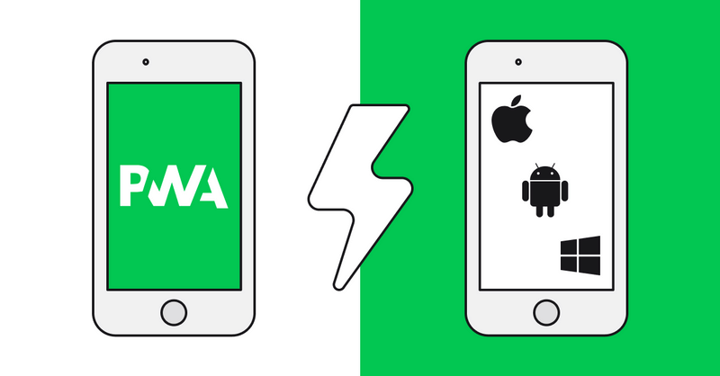

Creado por Fiorela Azahuanche
28 de mayo del 2022Es una web tradicional que todos conocemos, aunque incorpora algunas particularidades que simula la experiencia de una app nativa.
Utilizada por el ingeniero de Google Alex Russell en 2015.
Se llaman “progressive” o progresivas porque poco a poco van absorbiendo funcionalidades de las apps nativas como...
1. Crear una aplicación en Angular
ng new project-name
2. Agregar el paquete @angular/pwa
ng add @angular/pwa
3. Entender los archivos agregados/modificados
ngsw-config.json
{
"$schema": "./node_modules/@angular/service-worker/config/schema.json",
"index": "/index.html",
"assetGroups": [
{
"name": "app",
"installMode": "prefetch",
"resources": {
"files": [
"/favicon.ico",
"/index.html",
"/manifest.webmanifest",
"/*.css",
"/*.js"
]
}
},
{
"name": "assets",
"installMode": "lazy",
"updateMode": "prefetch",
"resources": {
"files": [
"/assets/**",
"/*.(svg|cur|jpg|jpeg|png|apng|webp|avif|gif|otf|ttf|woff|woff2)"
]
}
}
]
}
manifest.webmanifest
{
"name": "Coffee Queen",
"short_name": "Coffee Queen",
"theme_color": "#DD8017",
"background_color": "#DD8017",
"display": "standalone",
"scope": "./",
"start_url": "./",
"icons": [
{
"src": "assets/icons/icon-72x72.png",
"sizes": "72x72",
"type": "image/png",
"purpose": "maskable any"
},
{
"src": "assets/icons/icon-96x96.png",
"sizes": "96x96",
"type": "image/png",
"purpose": "maskable any"
},
{
"src": "assets/icons/icon-128x128.png",
"sizes": "128x128",
"type": "image/png",
"purpose": "maskable any"
},
{
"src": "assets/icons/icon-144x144.png",
"sizes": "144x144",
"type": "image/png",
"purpose": "maskable any"
},
{
"src": "assets/icons/icon-152x152.png",
"sizes": "152x152",
"type": "image/png",
"purpose": "maskable any"
},
{
"src": "assets/icons/icon-192x192.png",
"sizes": "192x192",
"type": "image/png",
"purpose": "maskable any"
},
{
"src": "assets/icons/icon-384x384.png",
"sizes": "384x384",
"type": "image/png",
"purpose": "maskable any"
},
{
"src": "assets/icons/icon-512x512.png",
"sizes": "512x512",
"type": "image/png",
"purpose": "maskable any"
}
]
}
angular.json
{
cli": {
"analytics": "ec4eac82-30f8-40c5-870f-18abfdc8b235"
},
"$schema": "./node_modules/@angular/cli/lib/config/schema.json",
"version": 1,
"newProjectRoot": "projects",
"projects": {
"coffee-queen": {
"projectType": "application",
"schematics": {
"@schematics/angular:component": {
"style": "scss"
},
"@schematics/angular:application": {
"strict": true
}
},
"root": "",
"sourceRoot": "src",
"prefix": "app",
"architect": {
"build": {
"builder": "@angular-devkit/build-angular:browser",
"options": {
"outputPath": "dist/coffee-queen",
"index": "src/index.html",
"main": "src/main.ts",
"polyfills": "src/polyfills.ts",
"tsConfig": "tsconfig.app.json",
"inlineStyleLanguage": "scss",
"assets": [
"src/favicon.ico",
"src/assets",
"src/manifest.webmanifest"
],
"styles": [
"src/styles.scss"
],
"scripts": [],
"serviceWorker": true,
"ngswConfigPath": "ngsw-config.json"
},
"configurations": {
"production": {
"budgets": [{
"type": "initial",
"maximumWarning": "750kb",
"maximumError": "1mb"
},
{
"type": "anyComponentStyle",
"maximumWarning": "2kb",
"maximumError": "4kb"
}
],
"fileReplacements": [{
"replace": "src/environments/environment.ts",
"with": "src/environments/environment.prod.ts"
}],
"outputHashing": "all"
},
"dev": {
"fileReplacements": [{
"replace": "src/environments/environment.ts",
"with": "src/environments/environment.dev.ts"
}]
},
"development": {
"buildOptimizer": false,
"optimization": false,
"vendorChunk": true,
"extractLicenses": false,
"sourceMap": true,
"namedChunks": true
}
},
"defaultConfiguration": "production"
},
"serve": {
"builder": "@angular-devkit/build-angular:dev-server",
"configurations": {
"production": {
"browserTarget": "coffee-queen:build:production"
},
"dev": {
"browserTarget": "coffee-queen:build:dev"
},
"development": {
"browserTarget": "coffee-queen:build:development"
}
},
"defaultConfiguration": "development"
},
"extract-i18n": {
"builder": "@angular-devkit/build-angular:extract-i18n",
"options": {
"browserTarget": "coffee-queen:build"
}
},
"test": {
"builder": "@angular-devkit/build-angular:karma",
"options": {
"main": "src/test.ts",
"polyfills": "src/polyfills.ts",
"tsConfig": "tsconfig.spec.json",
"karmaConfig": "karma.conf.js",
"inlineStyleLanguage": "scss",
"assets": [
"src/favicon.ico",
"src/assets",
"src/manifest.webmanifest"
],
"styles": [
"src/styles.scss"
],
"scripts": [],
"codeCoverage": true
}
}
}
}
},
"defaultProject": "coffee-queen"
}
app.module.ts
import { NgModule } from '@angular/core';
import { FormsModule } from '@angular/forms';
import { BrowserModule } from '@angular/platform-browser';
import { HttpClientModule, HTTP_INTERCEPTORS } from '@angular/common/http';
import { CoreModule } from './core/core.module';
import { SharedModule } from './shared/shared.module';
import { LoginModule } from './modules/login/login.module';
import { AppRoutingModule } from './app-routing.module';
import { AppComponent } from './app.component';
import { HeaderComponent } from './layout/header/header.component';
import { SkeletonComponent } from './layout/skeleton/skeleton.component';
import { FooterComponent } from './layout/footer/footer.component';
import { SidebarComponent } from './layout/sidebar/sidebar.component';
import { CookControlModule } from './modules/cook-control/cook-control.module';
import { NgbModule } from '@ng-bootstrap/ng-bootstrap';
import { NgSelectModule } from '@ng-select/ng-select';
import { AuthInterceptor } from './data/services/interceptor/auth.interceptor';
// Importing forms module
import { ReactiveFormsModule } from '@angular/forms';
import { BrowserAnimationsModule } from '@angular/platform-browser/animations';
import { ServiceWorkerModule } from '@angular/service-worker';
import { environment } from '../environments/environment';
import { HashLocationStrategy, LocationStrategy } from '@angular/common';
@NgModule({
declarations: [
AppComponent,
SkeletonComponent,
FooterComponent,
SidebarComponent,
HeaderComponent,
],
imports: [
BrowserModule,
CoreModule,
FormsModule,
AppRoutingModule,
SharedModule,
HttpClientModule,
LoginModule,
CookControlModule,
NgbModule,
NgSelectModule,
BrowserAnimationsModule,
ReactiveFormsModule,
ServiceWorkerModule.register('ngsw-worker.js', {
enabled: environment.production,
// Register the ServiceWorker as soon as the app is stable
// or after 30 seconds (whichever comes first).
registrationStrategy: 'registerWhenStable:30000',
}),
],
providers: [
{
provide: HTTP_INTERCEPTORS,
useClass: AuthInterceptor,
multi: true,
},
{ provide: LocationStrategy, useClass: HashLocationStrategy },
],
bootstrap: [AppComponent],
})
export class AppModule {}